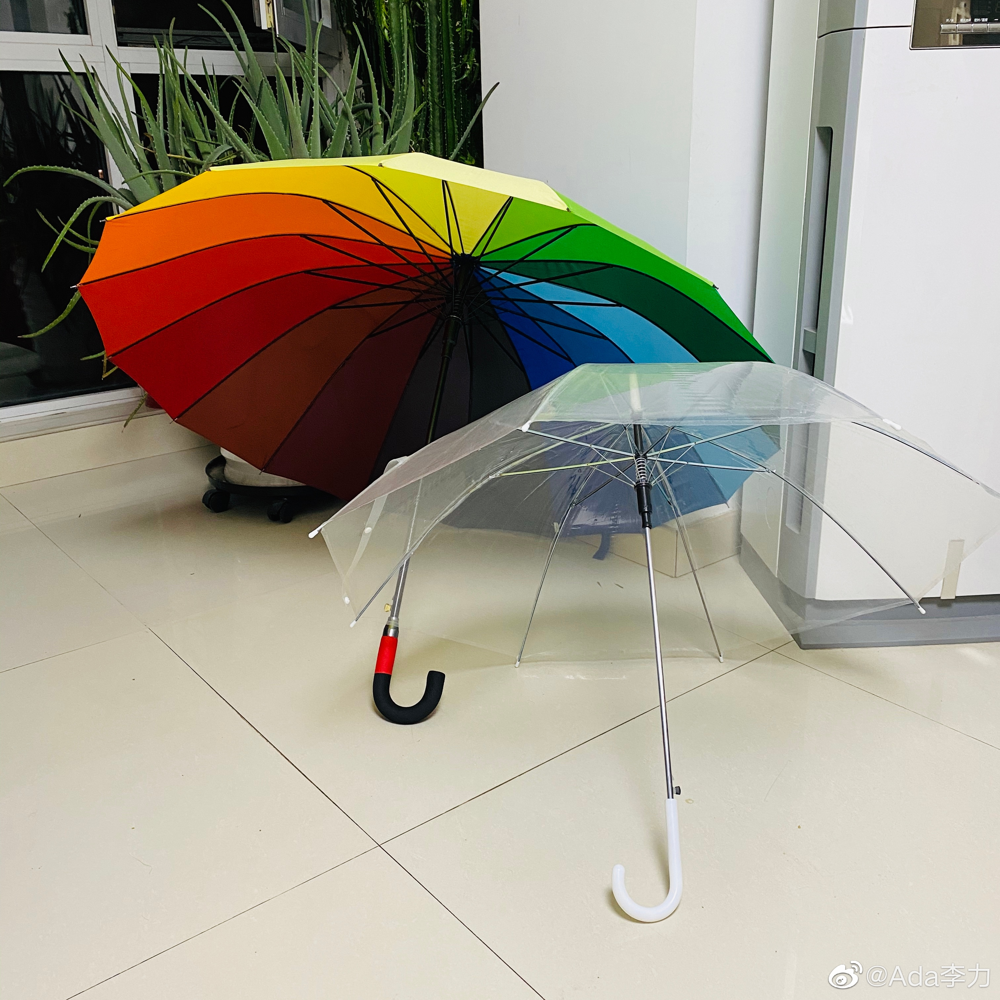

今天看起来要下雨，#姣姣#早上出门前犹豫带伞还是带雨衣，她骑自行车上下学。我当然认为应该带雨衣，骑车怎么打伞呢？但我还是尽量让闺女自己决定。淋湿了也是她自己的事情。
姣姣还是决定带伞，而且是把透明的长柄伞，我忽然明白，她考虑更多的是在校园里时下雨怎么办，而我只想到了上下学骑车时的场景。
我的盲区很严重。要提醒自己，以后给闺女提建议时，不要那么自以为是。
姣姣还是决定带伞，而且是把透明的长柄伞，我忽然明白，她考虑更多的是在校园里时下雨怎么办，而我只想到了上下学骑车时的场景。
我的盲区很严重。要提醒自己，以后给闺女提建议时，不要那么自以为是。
- 